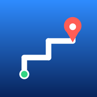

Rutas por calles reales
Pega una clave de Google (Geocoding API) y las direcciones se buscarán con Google, así caen donde las pone Google Maps. Se guarda solo en este navegador.
Arrastra un pin para corregirlo · Los tiempos son estimados · Todo se guarda en este dispositivo.